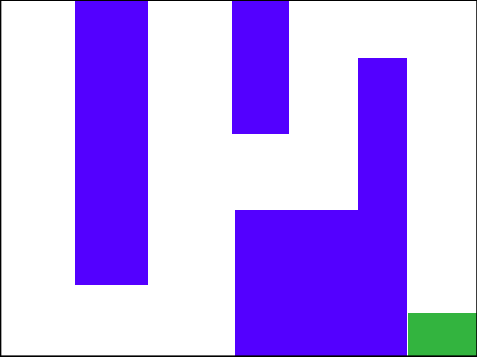
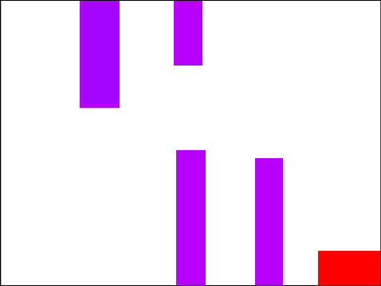
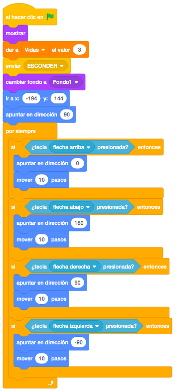
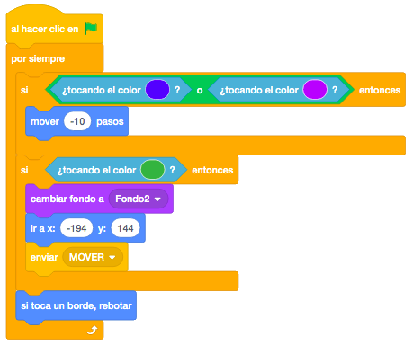
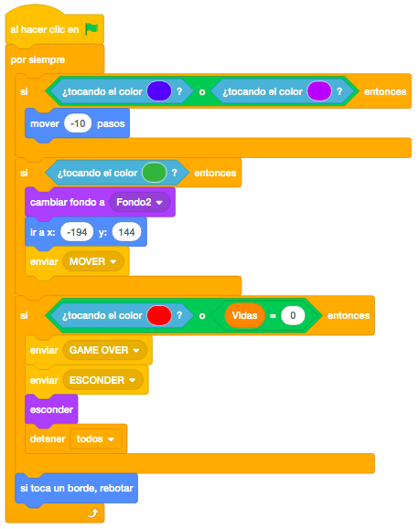
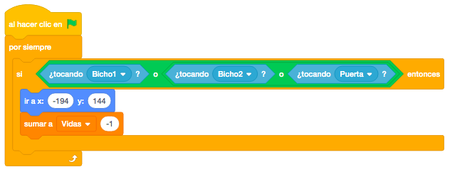
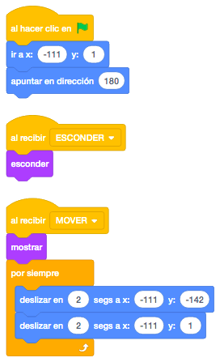
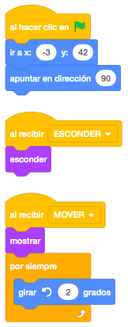
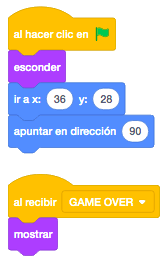
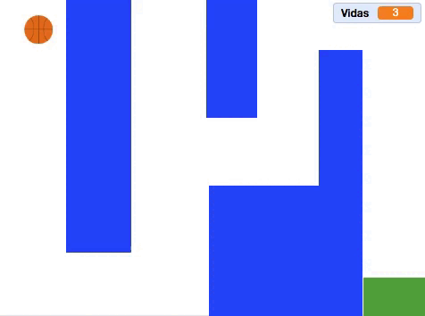

Necesitamos una pelota que es la que moveremos con los cursores, dos personajes más que los necesitaremos
cuando hagamos el segundo nivel y que se moverán para intentar atraparnos. También necesitamos una puerta que
estará rotando continuamente en el segundo laberinto.
Estos los cogeremos de la biblioteca de objetos. Necesitaremos un último objeto que dibujaremos a mano con
la opción de texto y que pondrá "Game Over".
Necesitaremos dos escenarios que serán los laberintos por donde la pelota tendrá que moverse. Los
dibujaremos y tendrán una zona de color al final del laberinto que será en el primero el paso al segundo y
en el segundo el fin del juego. Serán de distinto color en cada laberinto.
El primer laberinto será más fácil que el segundo.
El juego consiste en que la pelota la moveremos con los cursores en las cuatro direcciones y tendremos que
llegar al final del laberinto. No se podrán atravesar los muros. En el segundo escenario !cuidado¡ Si te
tocan los bichos, te quitan una vida y vuelves al inicio del laberinto.
Primero haremos los laberintos, que nos pueden quedar de la siguiente forma.


El primer laberinto será muy sencillo y lo único que controlaremos será que no pueda atravesar las paredes
de color.
Empezaremos a programar la pelota, que será el personaje del juego.
Crearemos la variable "Vidas" y le daremos un valor de 3. Al empezar en el nivel 1, esconderemos todos los
objetos que aparezcan en el nivel 2 mediante un mensaje "Esconder".
Pondremos el primer laberinto, posicionaremos la pelota en el lugar de inicio y controlaremos el movimiento
mediante los cursores.
Si el alumno da a varias teclas a la vez, puede que atraviese los muros, pero de momento no nos centraremos en eso.

Cuando la pelota choque con los bordes o con las paredes del laberinto, tendrá que rebotar. Para ello,
pondremos el bloque "Si Toca Un Borde , Rebotar" que nos servirá para los bordes, pero para el laberinto
tendremos que hacer que si toca el color de las paredes, retroceda los pasos que hemos andado.
También añadiremos para el primer laberinto, que si toca la zona de llegada, que será de otro color distinto
(en nuestro caso de color verde), cambiaremos el escenario al segundo laberinto y posicionaremos la pelota
en el punto de partida de este segundo nivel.
Además, mandaremos un mensaje "Mover" para mostrar los objetos del segundo nivel y empezar a moverlos.

Una vez estemos en el segundo nivel, programaremos también el la pelota que si toca la zona de llegada, (en
nuestro caso de color rojo), terminaremos el juego, ocultando todos los objetos y mostrando el objeto "Game
Over" que hemos creado.
También mostraremos el objeto "Game Over" cuando nos quedemos sin vidas.

Por último, si la pelota toca los objetos que tenemos en movimiento en el segundo laberinto, quitara 1 vida y moveremos la pelota a su posición inicial.

Los bichos los programaremos simplemente para que se muevan de una posición a otra.

La puerta la programaremos para que vaya girando poco a poco y continuamente.

Y el objeto "Game Over" lo único que tendrá será posicionarlo en la posición que queramos mostrarlo.

Podemos añadirle al juego que las dos casillas de final de los laberintos sean del mismo color.
Además, podemos añadir que al tocar los muros, en lugar de retroceder (rebotar) vuelva a la posición inicial
para hacer más complicado el juego.
Por último podemos añadirle más laberintos con distintas dificultades.
Y el juego quedaría así.

Para ver el juego terminado pulsa
aquí.
Para descargarte el juego terminado pulsa
aquí.